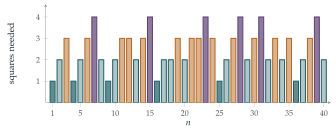

Let \(a, b, c, d, p, q, r\) and \(s\) be real numbers. By considering the determinant of the matrix product \[\begin{pmatrix} z_1 & z_2 \\ -z_2^* & z_1^* \end{pmatrix}\begin{pmatrix} z_3 & z_4 \\ -z_4^* & z_3^* \end{pmatrix},\] where \(z_1, z_2, z_3\) and \(z_4\) are suitably chosen complex numbers, find expressions \(L_1, L_2, L_3\) and \(L_4\), each of which is linear in \(a, b, c\) and \(d\) and also linear in \(p, q, r\) and \(s\), such that \[(a^2 + b^2 + c^2 + d^2)(p^2 + q^2 + r^2 + s^2) = L_1^2 + L_2^2 + L_3^2 + L_4^2.\]
The hook
\(7\) is not a sum of two squares, or of three. But it is a sum of four: \(7 = 4 + 1 + 1 + 1\). In 1770 Joseph-Louis Lagrange proved that every positive whole number is a sum of four squares (allowing \(0^2\)). The theorem had been conjectured by Bachet in 1621 and claimed by Fermat, who as usual left no proof; Euler worked on it for forty years without quite finishing.
The key tool, found by Euler in 1748, is in this question: a product of two sums of four squares is itself a sum of four squares. It means you only need to prove Lagrange’s theorem for prime numbers, and the rest follows by multiplying. The question derives the identity in a few lines from determinants of complex matrices, which are the quaternions of Section 6.7 in disguise.
Before you start
Recall the two-square version: \((a^2 + b^2)(p^2 + q^2)\) is a sum of two squares because \(|z|^2|w|^2 = |zw|^2\) for complex numbers \(z = a + b\mathrm{i}\), \(w = p + q\mathrm{i}\). How could matrices extend this to four squares?
The idea is to find a kind of “number” made from four real numbers whose “size squared” is \(a^2 + b^2 + c^2 + d^2\) and which is multiplicative. Matrices are multiplicative under determinants: \(\det(\mathbf{AB}) = \det\mathbf{A}\det\mathbf{B}\). So we want a matrix built from \(a, b, c, d\) whose determinant is \(a^2 + b^2 + c^2 + d^2\), and such that products of such matrices are again of the same form.
Working it through
Stage 1 The determinant is a sum of four squares
What is the determinant of \(\begin{pmatrix} z_1 & z_2 \\ -z_2^* & z_1^* \end{pmatrix}\)? If \(z_1 = a + b\mathrm{i}\) and \(z_2 = c + d\mathrm{i}\), what is it in terms of \(a, b, c, d\)?
\(\det = z_1z_1^* + z_2z_2^* = |z_1|^2 + |z_2|^2 = a^2 + b^2 + c^2 + d^2\). Similarly with \(z_3 = p + q\mathrm{i}\) and \(z_4 = r + s\mathrm{i}\), the second matrix has determinant \(p^2 + q^2 + r^2 + s^2\).
Stage 2 The product has the same form
Multiplying, \[\begin{pmatrix} z_1 & z_2 \\ -z_2^* & z_1^* \end{pmatrix}\begin{pmatrix} z_3 & z_4 \\ -z_4^* & z_3^* \end{pmatrix} = \begin{pmatrix} z_1z_3 - z_2z_4^* & z_1z_4 + z_2z_3^* \\ -z_2^*z_3 - z_1^*z_4^* & -z_2^*z_4 + z_1^*z_3^* \end{pmatrix}.\] Writing \(w_1 = z_1z_3 - z_2z_4^*\) and \(w_2 = z_1z_4 + z_2z_3^*\), the bottom row is \((-w_2^*, w_1^*)\), so the product is \(\begin{pmatrix} w_1 & w_2 \\ -w_2^* & w_1^* \end{pmatrix}\), of the same form. Its determinant is \(|w_1|^2 + |w_2|^2\), and since determinants multiply, \[(a^2 + b^2 + c^2 + d^2)(p^2 + q^2 + r^2 + s^2) = |w_1|^2 + |w_2|^2.\]
Stage 3 Reading off the four squares
Expand \(w_1 = (a + b\mathrm{i})(p + q\mathrm{i}) - (c + d\mathrm{i})(r - s\mathrm{i})\) and \(w_2 = (a + b\mathrm{i})(r + s\mathrm{i}) + (c + d\mathrm{i})(p - q\mathrm{i})\) into real and imaginary parts.
\[w_1 = (ap - bq - cr - ds) + \mathrm{i}(aq + bp + cs - dr),\] \[w_2 = (ar - bs + cp + dq) + \mathrm{i}(as + br - cq + dp).\] So \[\begin{aligned} L_1 &= ap - bq - cr - ds, & L_2 &= aq + bp + cs - dr, \\ L_3 &= ar - bs + cp + dq, & L_4 &= as + br - cq + dp, \end{aligned}\] each linear in \(a, b, c, d\) and in \(p, q, r, s\), with \((a^2 + b^2 + c^2 + d^2)(p^2 + q^2 + r^2 + s^2) = L_1^2 + L_2^2 + L_3^2 + L_4^2\).■
For example, \(7 = 2^2 + 1^2 + 1^2 + 1^2\) and \(3 = 1^2 + 1^2 + 1^2 + 0^2\). With \((a, b, c, d) = (2, 1, 1, 1)\) and \((p, q, r, s) = (1, 1, 1, 0)\) the formulas give \((L_1, L_2, L_3, L_4) = (0, 2, 4, 1)\), and indeed \(0^2 + 2^2 + 4^2 + 1^2 = 21 = 7 \times 3\).
Looking back
Multiplicativity does the work. The identity came from \(\det(\mathbf{AB}) = \det\mathbf{A}\det\mathbf{B}\), exactly as the two-square identity comes from \(|zw| = |z||w|\).
Closure under multiplication. The special form \(\begin{pmatrix} z_1 & z_2 \\ -z_2^* & z_1^* \end{pmatrix}\) is preserved by products, which is what makes the result another sum of four squares.
Bookkeeping matters. The final step is routine but error-prone; signs and conjugates must be handled carefully.
What’s really going on
Here is the shape of Lagrange’s proof. By Euler’s identity, it is enough to show every prime \(p\) is a sum of four squares. A counting argument shows that some multiple \(mp\), with \(m < p\), is a sum of four squares. A clever “descent” then shows that if \(mp\) is a sum of four squares with \(1 < m < p\), so is \(m'p\) for some smaller \(m'\); repeating, we reach \(m = 1\). (Compare Fermat’s descent in Section 1.5.) In 1834 Jacobi went much further and found the exact number of ways to write \(n\) as a sum of four squares: \(8\) times the sum of the divisors of \(n\) that are not multiples of \(4\). For example, \(1\) can be written in \(8\) ways (\(\pm1\) in any of four positions).

Two, three, four
The pattern across dimensions is subtle. Sums of two squares come from complex numbers, and a number is a sum of two squares exactly when its primes of the form \(4k + 3\) appear to even powers (Section 1.6). Sums of four squares come from quaternions, and every number is one. But sums of three squares have no multiplication identity at all (there is no three-dimensional number system with a multiplicative size; that is why Hamilton failed with triples, Section 6.7), and the theorem is harder: Legendre and Gauss showed that \(n\) is a sum of three squares unless \(n = 4^k(8m + 7)\) (Figure 7.8.1). Beyond four, the eight-dimensional octonions give an eight-square identity, found by Degen and Graves, and Hurwitz proved in 1898 that identities of this kind exist only for \(1\), \(2\), \(4\) and \(8\) squares.
Waring’s problem
Lagrange’s theorem is the first case of a question asked by Edward Waring in 1770: is there, for each \(k\), a number \(g(k)\) such that every positive integer is a sum of at most \(g(k)\) \(k\)th powers? David Hilbert proved in 1909 that there is. We now know \(g(2) = 4\), \(g(3) = 9\) (for example \(23 = 2 \cdot 2^3 + 7 \cdot 1^3\) needs nine cubes) and \(g(4) = 19\).
The thinking skill
To show a property is preserved under multiplication, find an algebraic structure (complex numbers, quaternions, matrices) in which the property is the “size” of an object and size is multiplicative.
Once such a structure is found, a product identity comes for free, and a problem about all numbers reduces to a problem about primes.
Try this next
A worked example. Use the formulas for \(L_1, \ldots, L_4\) with \((a, b, c, d) = (p, q, r, s) = (2, 1, 1, 1)\) to write \(49 = 7 \times 7\) as a sum of four squares, and check your answer. Is it the same as the obvious \(49 = 7^2 + 0^2 + 0^2 + 0^2\)?
Two squares inside four. Show that if \(c = d = r = s = 0\), the identity reduces to the two-square identity of Section 1.6.
Numbers needing four squares. Show that no number of the form \(8m + 7\) is a sum of three squares, by considering squares modulo \(8\).
Jacobi’s formula. Count the representations of \(2\) as a sum of four squares (with order and signs mattering), and check that the answer is \(8 \times (1 + 2) = 24\).
Further reading
Harold Davenport, The Higher Arithmetic (Cambridge University Press). Chapter V proves Lagrange’s four-square theorem.
John Conway & Derek Smith, On Quaternions and Octonions (A. K. Peters). The arithmetic of quaternions, including a proof of the four-square theorem via quaternion integers.
Aigner & Ziegler, Proofs from THE BOOK, chapter “Representing numbers as sums of two squares”. The two-square companion to this section.